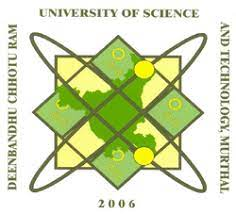

Kuldeep Singh ThakurB.Tech. - Electronics and CommunicationDeenBandhu Chhotu Ram University of Science |
(+91)8505929865 tkuldeep184@gmail.comAya-Nagar, New-Delhi |
To be a part of a reputed organization where I can utilize my skills and knowledge for the growth and betterment of the company and in return company provides me the opportunity to grow and learn more to enhance my capability and skills.
| Education | College/Institute | Year | Percentage/CGPA |
|---|---|---|---|
| B.Tech | DCRUST,Murthal | 2022-2026 | 7.10 SGPA(till 3rd sem) |
| Class XII C.B.S.E | VIDYA School, Gurugram | 2021 | 93.4% |
| Class X C.B.S.E | VIDYA School, Gurugram | 2019 | 94.6% |
| Soft skills | Communication skills, Problem Solving, Leadership, Time Management |
| Programming Languages | C, C++ |
| Relevant Courses | Electronic Devices, Analog Circuits, , Communication Systems, Computer Architecture, Digital Electronics, Data Structures and Algorithms, OOPS |
| Tools and Softwares | AutoCAD, VS code, Excel, Word, Canva |